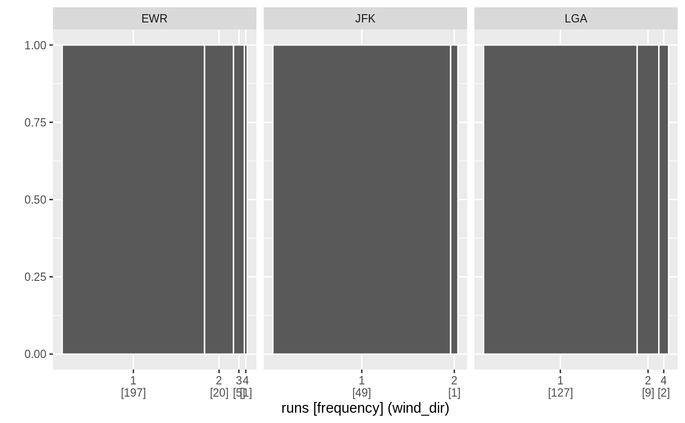
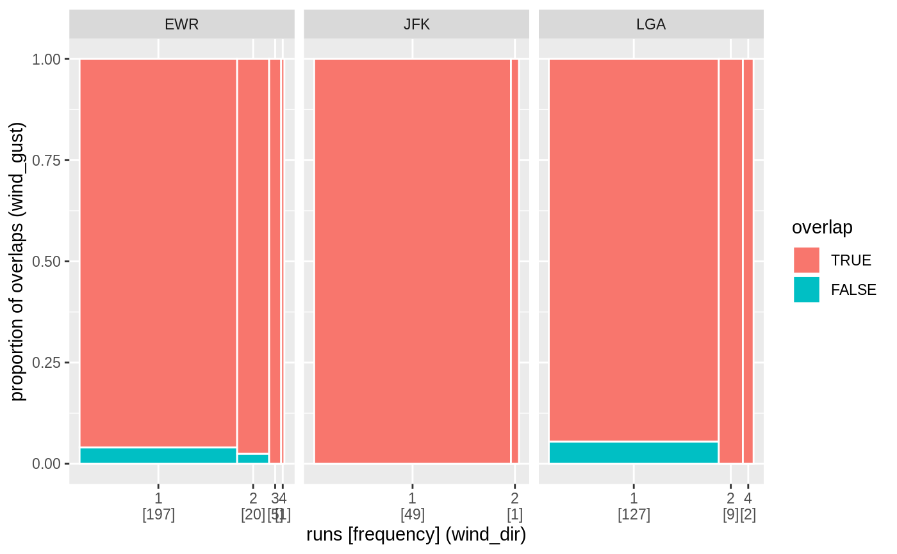

Range plot and spinoplot for runs of missings
mists-plot.RdRange plot and spinoplot for runs of missings
# S3 method for mists_rle_na autoplot(object, y = as.factor(1L), ...) na_rle_spinoplot(x, y = NULL)
Arguments
| object | an object, whose class will determine the behaviour of autoplot |
|---|---|
| ... | Individual aesthetics passed to |
| x, y | Objects returned by |
Examples
if (!requireNamespace("nycflights13", quietly = TRUE)) { stop("Please install the nycflights13 package to run these following examples.") } library(dplyr, warn.conflicts = FALSE) na_runs_wind <- nycflights13::weather %>% group_by(origin) %>% summarise_at(vars(contains("wind")), ~ list_of_na_rle(., time_hour)) autoplot(na_runs_wind$wind_dir[[1]])autoplot( vctrs::as_list_of(na_runs_wind$wind_dir[[2]], na_runs_wind$wind_gust[[2]]), y = paste(c("wind_dir", "wind_gust"), "JFK", sep = "@") )na_rle_spinoplot(na_runs_wind$wind_dir[[1]])na_rle_spinoplot(na_runs_wind$wind_dir[[1]], na_runs_wind$wind_gust[[1]])na_rle_spinoplot(na_runs_wind$wind_dir[[1]], na_runs_wind$wind_dir[[3]])